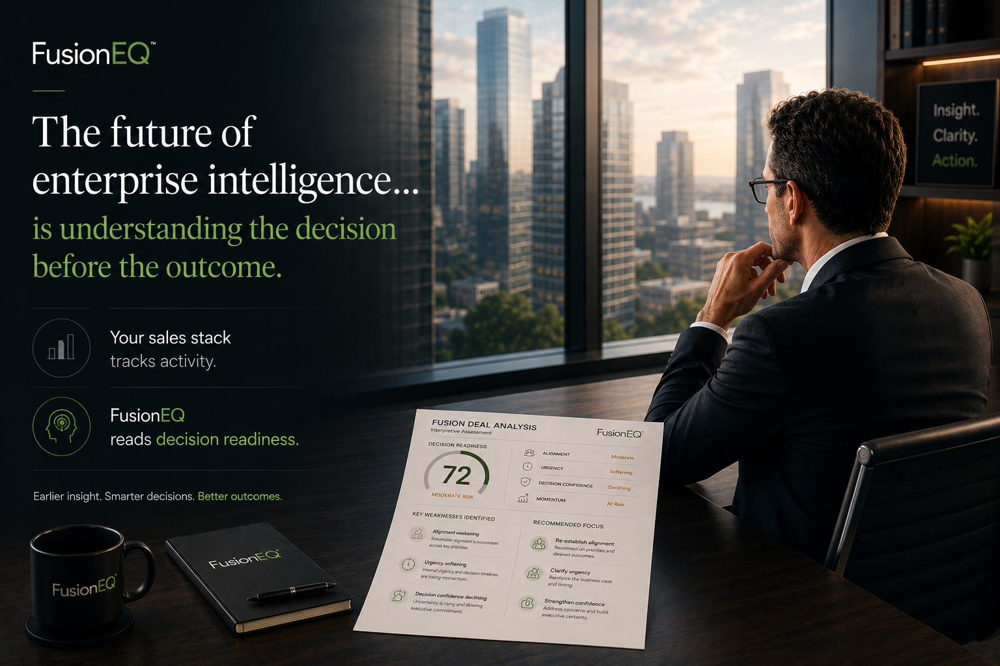
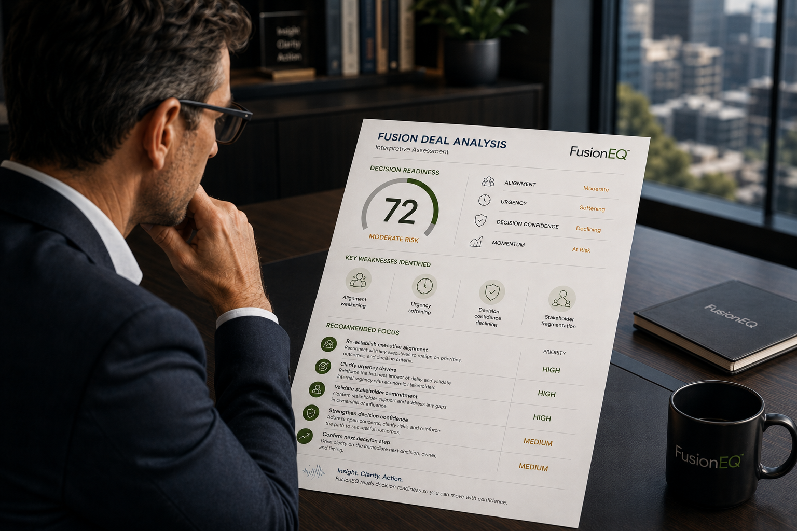

FusionEQ Diagnostic Pilot™
A strategic revenue interpretation engagement.
The FusionEQ Diagnostic Pilot applies the FusionEQ Lens to live enterprise deals, customer-facing presentations, or pipeline questions so leaders can interpret what the activity is revealing before forecast risk becomes visible.
The Diagnostic Pilot is designed to uncover hidden pipeline risk, false momentum, organizational misreads, forecast distortion, and decision friction. It includes analysis, executive readouts, and guidance for the next strategic move.
Each FusionEQ Diagnostic Pilot is customized around the organization’s live opportunities, revenue questions, and leadership priorities.
FusionEQ doesn’t replace your judgment. It sharpens it.

- Choose the diagnostic focus. Decide whether the work should focus on a live deal, a presentation, pipeline patterns, or a combined diagnostic.
- Request an intro conversation. Confirm fit, scope, and what needs to be evaluated.
- Activate analysis and coaching. Once scoped, the right FusionEQ analysis path opens and the readout/coaching process begins.
Analysis + Coach
The Diagnostic Pilot includes the readout and the next-move coaching.
FusionEQ is not just a report. The analysis identifies what the decision signals mean; the coach turns that interpretation into a practical move the team can use.
Reads the deal or presentation for alignment, urgency, influence, decision ownership, hidden friction, false momentum, and forecast distortion.
Summarizes decision readiness, structural risk, key weaknesses, and recommended focus areas in an executive-ready format.
Translates the read into next-step guidance: the conversation to have, the risk to validate, the stakeholder to engage, and the move to make next.
What FusionEQ Evaluates
Decision readiness is the difference between activity and actual organizational movement.
The Diagnostic Pilot evaluates whether visible engagement is becoming real progress toward an enterprise decision.
Alignment Are stakeholders converging on the same problem, value, risk, and next step?
Ownership Is there clarity on who owns the decision, the internal process, and the next move?
Momentum Is progress buyer-driven and structural, or simply the continuation of meetings and tasks?
Hidden friction What resistance, hesitation, false momentum, or unresolved risk is slowing the organization?
Confidence to decide Does the buying group have enough conviction to move from interest to commitment?
Diagnostic Paths
Choose the diagnostic focus.
The Diagnostic Pilot can focus on a deal, a presentation, pipeline patterns, or a combined diagnostic. Each engagement is customized around the organization’s live opportunities, revenue questions, and leadership priorities.
Interpret decision dynamics inside an active opportunity or focused deal set, then guide the next 3-5 moves.
Analyze a customer-facing presentation, then coach the decision path, ownership, and next-step quality.
Use the Diagnostic Pilot across a deal and a presentation when both the opportunity and message need a sharper read.
Review repeated misreads across a focused set of opportunities to identify structural pipeline risk.
Deal Path
Interpret the deal. Guide the next move.
FusionEQ Deal Lens identifies the risk. FusionEQ turns the readout into a controlled deal plan: the one constraint to attack, the conversation to script, the sequence to run, and the risks to pre-wire before they slow the close.
Isolate the one issue most likely to kill momentum so the team stops diluting effort.
Script moments like pushing back on a quote request, finding the real decision maker, or surfacing budget truth.
Define who does what, in what order, by when, and what could break before the next interaction.
Presentation Path
Analyze the presentation. Coach the decision move.
FusionEQ Presentation Lens identifies whether the presentation created decision movement, ownership, alignment, urgency, and a defined next step.
Identify whether the presentation changed the opportunity or only created discussion.
Find whether anyone became responsible for advancing the decision after the presentation.
Turn the next interaction into a decision milestone, not another conversation.
What You Receive
Executive interpretation first, then a working session to apply what FusionEQ finds.

Decision signals
Structural risk areas
Misalignment indicators
Forecast distortion indicators
Interpretation of findings
Decision risk assessment
Pipeline pattern read
Recommended focus areas
Walkthrough of findings
Strategic intervention guidance
Recommended actions for the next move
Start with the opportunity, presentation, or forecast question that needs a sharper read.
Use the FusionEQ Diagnostic Pilot when an opportunity, presentation, or forecast question needs clearer interpretation. Choose the diagnostic focus, then request a brief introductory conversation when you are ready to scope access.